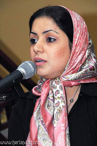

پذيرش > سایت نوشته ها > گزارشی از یک نشست پربار / فرناز سيفي


 گزارشی از یک نشست پربار / فرناز سيفي گزارشی از یک نشست پربار / فرناز سيفي
2 آذر 1385 - - نسخه قابل چاپ
وبلاگ امشاسپندان: گمان نمی کنم دفتر موسسه کنشگران داوطلب هیچ وقت به اندازه دیشب، این تعداد فمینیست را در خود جا داده باشد. حدود سی فمینیست مراکشی، بلژیکی و ترکیه ای برای سمینار " زنان در جوامع در حال تغییر" که فردا برگزار می شود به تهران آمده اند. به این تعداد حدود بیست نفر از فمینیست های عضو کمپین " یک میلیون امضا برای تغییر قوانین تبعیض آمیز" را نیز اضافه کنید و تصور کنید که دفتر کنشگران داوطلب دیشب چه ازدحامی داشت.
این نشست خصوصی، برای آشنایی فمینیست های بلژیکی، مراکشی و ترکیه ای با کمپین" یک میلیون امضا برای تغییر قوانین تبعیض آمیز" اهداف، شیوه ها و اعضای کمپین بود. قبلن هم نوشته بودم که ایده این کمپین در حقیقت از حرکت فمینیست های مراکشی گرفته شد که یک میلیون امضا را جمع آوری کرده و نزد پادشاه خود برده و خواستار تغییر قوانین شدند. دیشب، درباره نحوه کار خود و برنامه ریزی های خودو قوانینی که تغییر کرد توضیحات خوبی دادند. چند بار تکرار کردند که شرایط سیاسی کشور بسیار مستعد چنین امری بود و از سوی خود دولت حمایت شدند؛ حتا بودجه کمپین را نیز خود دولت تامین کرده بود. حالا خودتان مقایسه کنید با وضعیت ما که مدام زیر ضرب و سرکوب حکومت هستیم و هیچ حمایتی نمی شویم ( حتا از سوی بسیاری از فعالان سیاسی و اجتماعی و حقوق بشری و غیره) ... یکی از بچه های کمپین سوال کرد که آیا هرگز با خشونت پلیس یا برخوردهای حکومتی مواجه شدند و مراکشی ها با حیرت جواب دادند که هرگز و چرا باید با آنها برخورد بشود؟ خلاصه که کانتکست زمین تا آسمان متفاوت است و یکی از فمسینیست های بلژیکی که قبلن نماینده پارلمان هم بوده است گفت قضیه شما کاملن متفاوت و واقعن نمونه خاصی است و من این همه پشتکار و شجاعت را جدن تحسین می کنم و بی نهایت به این کار ارزشمند شما احترام می گذارم.
قوانین گذشته مراکش بسیار شبیه به قوانین فعلی کشور ما بوده است و تغییرات واقعن شگفت انگیز و قابل تحسینی در این قوانین رخ داده است. فمینیست های مراکشی می گفتند در مراکش، پادشاه امیر المومنین و عالی ترین مقام مذهبی نیز هست و در نهایت او هست که باید هر تغییری را تایید کند. پادشاه فعلی خود بسیار رفرمیست و خواهان جامعه مترقی است و از تلاش های این زنان همه جانبه حمایت کرده است. در سال هزار و نهصد و نود و سه که کمپین را آغاز کردند پدر این پادشاه فعلی بر مسند سلطنت قرار داشته و به اندازه پسر افکار باز نداشته است و در نتیجه در آن زمان کمپین زنان تنها موفق به کسب پیروزی هایی جزئی شد.
اما کمپین زنان ترکیه، کمپینی جدن قابل تحسین و امری ضروری است. فمینیست های سکولار از سی ان جی او زنان، به محض اینکه مجلس ترکیه تصمیم به اعمال برخی تغییرات قانونی کرد، دور هم جمع شدند و شروع به بازنویسی تمام قوانین و ماده های ضد زن کردند. یکی از فمینیست های ترکیه ای می گفت اگرما این کمپین را راه نمی انداختیم، دولت تنها دست به اعمال تغییراتی جزئی و سطحی می زد و فرصت از کف می رفت. آنها از حقوقدانان بسیاری دعوت کردند و با کمک و مشاوره آنها قوانین را بند به بند بازنویسی کردند، برای مثال واژه های " زن باکره" ، " زن مجرد" یا " زن متاهل" را به کلی از قانون حذف کردند و گفتند ما یک واژه برای هر زنی داریم و آن هم " زن" است و تمام. تغییراتی که آنها خواستار بودند در هر سه حوزه قانون جزا، قانون مدنی و قانون حمایت از خانواده بوده است.
درباره قانون حمایت از خانواده توضیح دادند که موفق به کسب پیروزی بزرگی شدند و توانستند به پارلمان فشار بیاورند تا قانونی را تصویب کنند که به موجب آن وقتی زنی مورد خشونت همسر، پدر یا برادر قرار بگیرد بدون رفتن به پزشکی قانونی تنها یک شکایت نامه بنویسد و به اداره پلیس ارائه کند. پلیس تحقیق خواهد کرد و شهادت همسایگان که قبل ازآن معتبر دانشته نمی شد نیز الان معتبر بوده و زمانی که برای پلیس مسجل شد که مرد زن را تحت خشونت قرار داده است، مرد باید خیلی زود خانه را ترک کند. تا سه ماه مرد حق نخواهد داشت زن یا بچه هایش را ببیند و باید مخارج آنها در این مدت را نیز بپردازد. بعد از سه ماه اگر مرد اعلام کرد که متنبه شده و دیگر دست به خشونت علیه همسر خود نمی زند می تواند به خانه بازگردد و اگر بار دیگر مرتکب خشونت شود باز برای سه ماه پلیس او را از خانه اش بیرون می کند. ترکیه ای ها می گفتند در جامعه ترکیه برای یک مرد ننگ بزرگی است که در محل و جلو چشم همسایه ها پلیس او را از خانه اش بیرون بیاندازد.
سی ماده از سی و پنج ماده پیشنهادی فمینیست های ترکیه ای به تصویب پارلمان رسیده است و آنها کماکان به دنبال تصویب پنج ماده دیگر هستند که یکی درباره سقط جنین است و یکی از مهم ترین آنها در رابطه با قتل های ناموسی. در قانون ترکیه برای توصیف این قتل ها از واژه " قتل های به رسم سنت" نام برده شده است و فمینیست ها مصرانه پیگیر هستند که واژه " قتل ناموسی" جایگزین شود و مجازات اندک این قتل را نیز افزایش دهند.
فمینیست های ترکیه ای نیز در روند کمپین بزرگ خود از حمایت نماینده های اقلیت و اپوزسیون در پارلمان بهره مند بوده و بخش مهمی از رسانه های داخلی و بین المللی کشورشان نیز از آنها حمایت می کرده است، هیچ تهدید و دستگیری و ضرب و شتمی هم در کار نبوده است. هر زمان هم که قرار بر بحث درباره بندهای پیشنهادی آنها در مجلس بوده است ، نمایندگان اپوزیسیون پارلمان آنها را باخبر کرده و هربار چهل پنجاه نفری از انها به مجلس می رفتند تا در جریان بحث ها باشند و سه تظاهرات بزرگ را نیز برای اهداف خود ساماندهی کرده اند.
یکی از فمینیست های بلژیکی که روزنامه نگار و یک دوره نیز نماینده پارلمان بوده است به من می گفت سی سال پیش برای حق آزادی سقط جنین آنها نیز از شیوه " چهره به چهره" در کمپین خود استفاده می کردند، وسط خیابان ها یا محل های خرید می ایستادند و با صدای بلند از زنها و مردها می خواستند که به حرف آنها گوش دهند و بیانیه آنها را امضا کنند و چند بار پشت سر هم گفت: این شیوه عالی است، عالی.
خلاصه که راهی که ما پیش رو داریم بسیار بسیار دشوارتر، سنگلاخ تر و پیچیده تر است و کافی است ذره ای ناامیدی در وجودمان راه پیدا کند....باور کنید ناامیدی برای راهی که انتخاب کردیم از هر سمی مهلک تر است.
پ.ن: یکی از فمینیست های ترکیه ای وقت معرفی خود گفت: من فلانی هستم. یک فمینیست رادیکال، نه من از دولت خوشم می آید و نه دولت از من... به قدری خوشم آمد. در جثه ظریف و صورت ظریفش آنقدر اراده مصمم می دیدی که ناخوداگاه تحسینش می کردی حالا قرار است با او مصاحبه کنم..
پ.ن.ن: یکی دیگر از فمینیست های ترکیه ای حرف خوبی زد. گفت ما سکولارها از اساس کاری به فمینیست مسلمان ها نداریم و بالعکس، هیچ وقت هم دنبال کار با یکدیگر نمی رویم و هرکس کار خود را می کند. حرف حساب بود.
وبلاگ امشاسپندان
ارسال به
بالاترین
،
توییتر
،
فریندفید
،
فیسبوک
در همين بخش :
 یک خبر تلخ؟ یک قانونشکنی؟ یک تصمیم بخشنامهای جدید؟ یک خبر تلخ؟ یک قانونشکنی؟ یک تصمیم بخشنامهای جدید؟
چرا بایست به سکسوالیته پرداخت؟ / نفیسه آزاد
آزارجنسی خانگی؛ «قربانی» نه، «نجات یافته»
زنان، بزرگترین بازندگان بهار عرب
سانسور از دیدگاه جنسیتی/الهه امانی
ديگر بخش ها :
طرح یک میلیون امضا
|
مقالات
|
سایت نوشته ها
|
اخبار
|
گزارش كمپين
|
گفت و گو
|
علیه سکوت
|
كوچه به كوچه
|
نامه های شما
|
گزارش ویژه
|
گفتگو با اعضا
|
ویژه سالگرد کمپین
|
تصویر برابری
|
دل آرام علی
|
تریبون
|
مقالات
|
تاریخ شفاهی
|
خارج از چارچوب
|
کتابخانه
|
درباره کمپین
|
کمپین در شهرها
|
کمپین در بند
|
صدای تغییر
|
ویژه 22 خرداد
|
لایحه حمایت از خانواده
|
گالری
|
عشا مومنی
|
امیر یعقوبعلی
|
خدیجه مقدم
|
راحله عسگری زاده و نسیم خسروی
|
پروین اردلان،جلوه جواهری، مریم حسین خواه، ناهید کشاورز
|
زینب پیغمبرزاده
|
سعیده امین، سارا ایمانیان، محبوبه حسین زاده، ناهید کشاورز و همایون نامی
|
احترام شادفر
|
نسیم سرابندی زاده،فاطمه دهدشتی
|
وبلاگ مهمان
|
پرونده خرم آباد
|
دستگیری ها
|
مریم مالک
|
پرستو اللهیاری
|
مهرنوش اعتمادی
|
سمیه رشیدی
|
Other Languages
|
همراهان
|
«فراخوان کمپین ده روز با بهاره هدایت»
| English
|